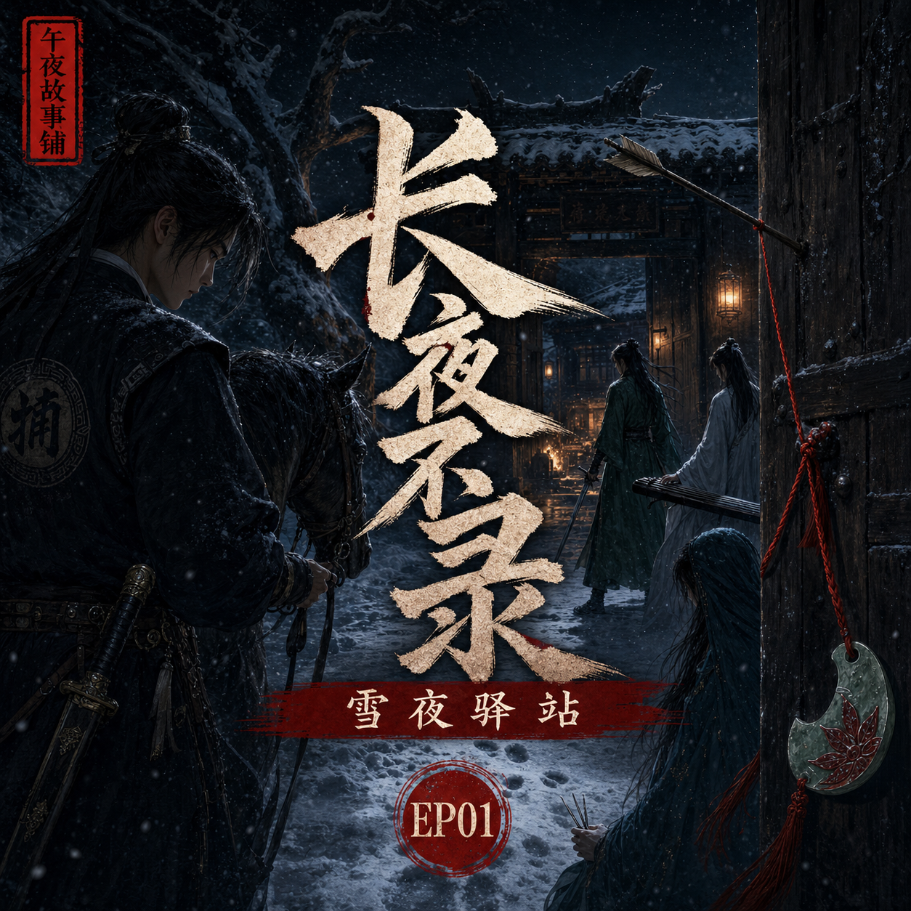

长夜不录：雪夜驿站
那一夜，风雪封山，清河县捕头押着一个小贼，走进了后来改变他一生的驿站

简介
大胤末年，清河县捕头沈砚押送盗马贼赵三，夜宿风雪中的断云驿。驿站里，有洗剑楼少主柳照寒，有神秘医女温令仪，也有琴剑双绝的白衣客谢兰舟。一个看似普通的雪夜，几名互不相识的人被困在同一座驿站。沈砚还不知道，自己这一脚踏进去，踏进的不是驿门，而是一桩横跨十七年的旧案。
标签
- 古风
- 刑侦
- 武侠
- 悬疑
- 爱情
- 江湖
- 命案
那一夜，风雪封山，清河县捕头押着一个小贼，走进了后来改变他一生的驿站

大胤末年，清河县捕头沈砚押送盗马贼赵三，夜宿风雪中的断云驿。驿站里，有洗剑楼少主柳照寒，有神秘医女温令仪，也有琴剑双绝的白衣客谢兰舟。一个看似普通的雪夜，几名互不相识的人被困在同一座驿站。沈砚还不知道，自己这一脚踏进去，踏进的不是驿门，而是一桩横跨十七年的旧案。